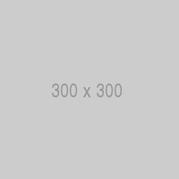

About Me

My name is Yodit Araye. I grew up in Ethiopia. I come from a large family with a grandmother being the matriarch, responsible for the blessings and fortunes of many of my family members!
I graduated, both in Ethiopia and here in the states with degrees in Accounting and Biology. I believe in simplicity and enjoy books, physics, chemistry, as well as long walks, and flowers.
I am the mother to an energetic, loving 11 month old and wife to wonderful, kind, and supportive husband. I enjoy and have a knack for computer related tasks and programs. I hope to one day run my own business with my husband.